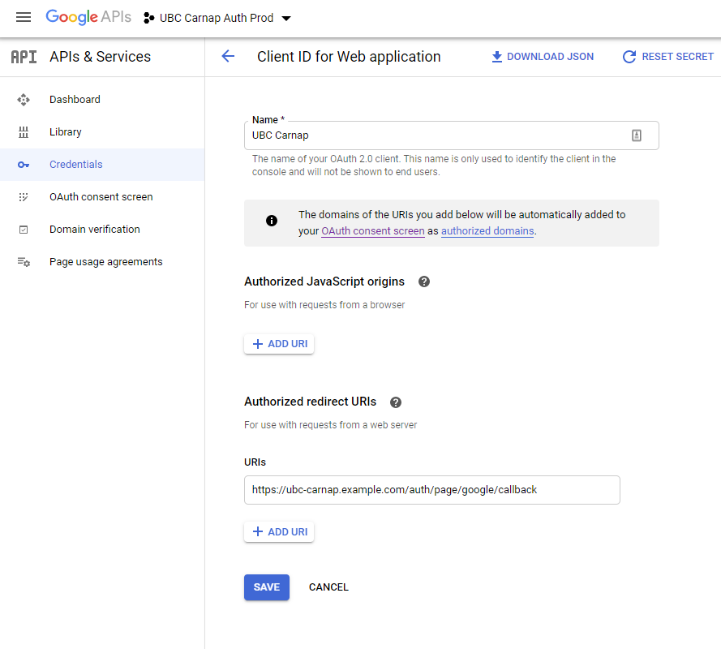

29 Configuring Carnap
Carnap uses a settings file, settings.yml, to store its configuration. You can find the example version at Carnap-Server/config/settings-example.yml. On the initial build, to utilize binary caching, our Makefile tries to copy this example set of settings to settting.yml, so that your build will exactly match a standard build, hopefully enabling Nix to use previously cached information stored on cachix to speed things up for you.
You can edit settings.yml, and rebuild the server to change the default settings. You can also change the settings at runtime (that is, after building the server) by using environment variables or providing a different settings file as an argument to the Carnap executable. Runtime configuration is useful for Docker deployments, where you may wish to simply run the latest docker image, without building your own server (deployment with docker is out of the scope of this document). The settings file lets you set a number of variables, the most important of which are:
| Name | Purpose |
|---|---|
| STATIC_DIR | The location of the static directory where Carnap looks for things like CSS style sheets, script files, and fonts. |
| APPROOT | The address at which the Carnap server will be accessed. |
| DATAROOT | The location of Carnap’s data directory. |
| BOOKROOT | The location of the directory holding the Carnap book. |
| GOOGLEKEY | The API key for Google authentication |
| GOOGLESECRET | The Google Auth secret string |
29.0.1 Directories
The Carnap server needs access to three directories. These are:
- The data directory, which holds uploaded documents,the cookie encryption key, and the database containing user, course, and submission data (if Carnap uses
sqliteto administer the database, and not a database server). It must be writable by the Carnap server process, and its location is given as theDATAROOTvariable. This can be anywhere you like, but the build environments have it inCarnap/dataroot. The directory must exist when you run the server. - The directory holding static files such as CSS style sheets and JavaScript files. Its location is given as the
STATICROOTvariable. In the source distribution, this directory is located inCarnap/Carnap-Server/static.(If you want Carnap to locate these files somewhere else you can instead set theSTATICROOTvariable to the full URL of the static directory.) - The book directory holds the Carnap book. In the source distribution, this directory is located in
Carnap/Carnap-Book.
Paths to these directories should be absolute, or relative to the directory from which you run the Carnap server. For instance, if you want to run Carnap from the source directory, your mysettings.yml file should contain the following lines:
static-dir: "_env:STATIC_DIR:Carnap-Server/static"
data-root: "_env:DATAROOT:dataroot"
book-root: "_env:BOOKROOT:Carnap-Book"29.0.2 HTTP access
Carnap is obviously a web application, and the Carnap server needs to know where you (or your users) will access it. The two relevant variables are APPROOT, which is the URL of the Carnap server, and PORT, which is the TCP port where Carnap will be provided on the local machine.
For testing purposes, it is often enough to provide the Carnap app locally on your machine only, and not make it accessible from the network. In such a situation, your mysettings.yml file should contain the lines:
port: "_env:PORT:3000"
approot: "_env:APPROOT:http://localhost:3000"This will make Carnap available on your machine only at the URL http://localhost:3000.
If you are making Carnap available over the network, you need to know the URL at which Carnap will be available, and set a reverse proxy on the server with that address to the host/port where Carnap is hosted. For instance, say you want Carnap to be accessible at https://carnap.bigstateu.edu, and Carnap runs on the server webappserv.bigstateu.edu on port 3000. Then your web administrator has to set a reverse proxy that translates HTTP requests for https://carnap.bigstateu.edu internally to webappserv.bigstateu.edu:3000. Your mysettings.yml file should then contain the lines:
port: "_env:PORT:3000"
approot: "_env:APPROOT:https://carnap.bigstateu.edu"If your machine is accessible from the internet and you want to make your own Carnap server available, you could use a simple solution such as caddy.
29.0.3 Database
If the setting variable SQLITE in settings.yml is set to true (default), or if the environment variable SQLITE is set to true, Carnap will generate a lightweight database for storing its data, using (SQLite).
If SQLITE is set to false, Carnap will instead use a PostgreSQL database. Set the environment variable SQLITE=false and supply PGUSER, PGPASS, PGHOST, and if required, PGPORT and PGDATABASE for your postgresql database instance.
Which database should you use? Sqlite is simpler to manage, and should be adequate for most installations with fewer than 500 users. For larger installations, PostgreSQL may be appropriate.1
If you wish to use peer authentication via Unix socket on a locally hosted PostgreSQL database, set all of PGUSER, PGPASS, PGHOST and PGPORT to empty strings.
29.1 Authentication
Carnap servers currently require Google authentication to be configured for administration purposes, even if it is not intended to be used by students. (See the LTI 1.3 documentation for details on how to configure LTI authentication, after completing setup).
Is there a way to run Carnap without Google Auth once it’s built without the
devflag? If not, how do you build it without Google Auth if you really just want to play on your laptop?
Setting up Google authentication requires setting up a Google APIs project.
First, create a project in Google’s developer console. Then, create an OAuth2 client ID under Google credentials.
It will show up like this:

Click “Create Credentials”. On the client ID page, set an Authorized Redirect URI for APPROOT/auth/page/google/callback, where APPROOT should be replaced by the value of your APPROOT settings variable.

The following didn’t make sense to me and I don’t recall seeing anything about scopes.
On your OAuth2 Consent Screen tab, no scopes need to be added as Carnap just needs emails to log in.
Once you’ve configured all the information on the Google side, fill it in the Carnap settings file:
google-api-key: "_env:GOOGLEKEY:<your Google client ID>"
google-secret: "_env:GOOGLESECRET:<your Google secret>"Why? PostgreSQL is preferred in industry, and may have some security advantages depending on your server configuration. Sqlite also doesn’t have the same level of support for concurrent writes to the database as PostgreSQL, but Carnap retries database transactions that fail because the database is busy, so this shouldn’t generally cause any trouble in low-traffic scenarios.↩︎